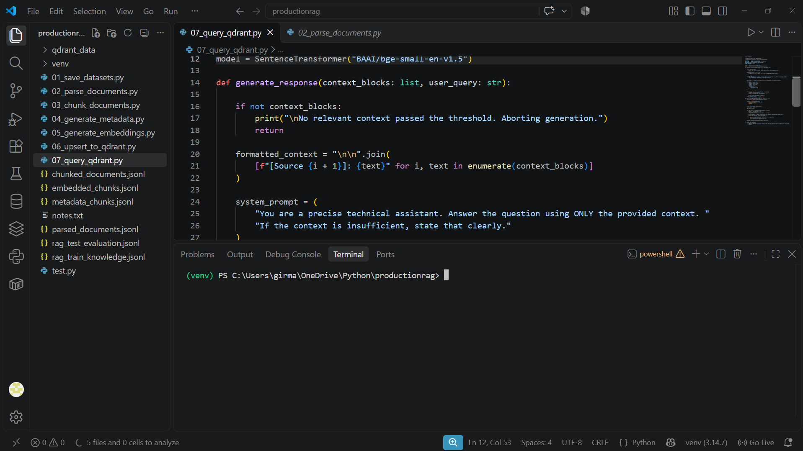

Non-Agentic RAG Pipeline

A local RAG system featuring full data ingestion, local embedding via sentence-transformers, Qdrand vector database, and local generation using llama3.2:3b.
How I built it
- Parsed and chunked local raw documents for data ingestion.
- Generated local vector embeddings using sentence-transformers.
- Stored and indexed embedding vectors inside a Qdrant database container.
- Integrated Llama 3.2:3B via Ollama for local response generation.
Technologies Used
- Python
- Sentence Transformers
- Qdrant Vector DB
- Ollama / Llama 3.2